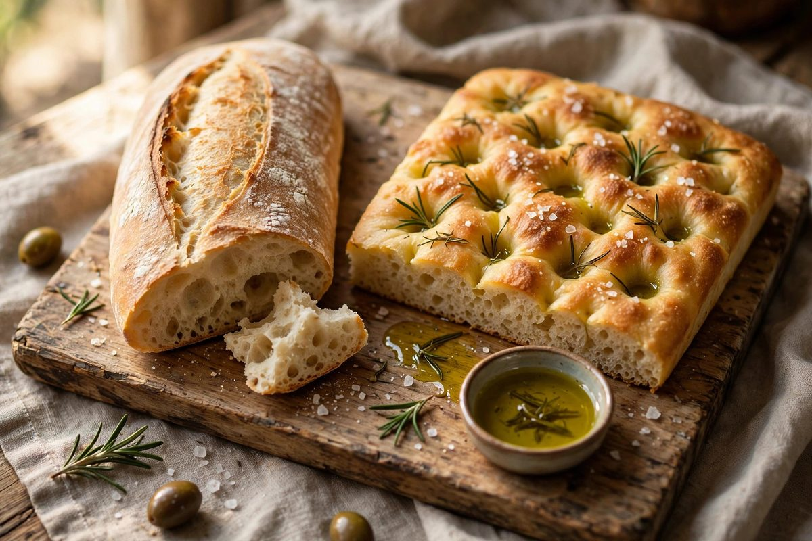

Home › Guides
Italian Bread: Focaccia, Ciabatta and Rustic Loaves

Bread is the foundation of Italian cooking. It is the spoon for soup, the plate for bruschetta, and the companion to every meal. Italian bread is not one thing: it ranges from the soft, oily flatbread of focaccia to the open, chewy crumb of ciabatta. All of them share the same principles: good flour, time, and a hot oven.
Focaccia
Focaccia is the easiest Italian bread to make at home. Mix flour, water, yeast, and salt into a wet, sticky dough, then let it rise until doubled. Press it into an oiled tray, dimple it deeply with your fingers, and drizzle generously with olive oil and flaky salt.
Let it rise again for 30 minutes, then bake at 220 degrees Celsius until golden, about 20 minutes. Add toppings before baking, such as rosemary, cherry tomatoes, or olives, but keep them simple. Focaccia is best eaten warm, on the day it is made.
Ciabatta
Ciabatta means slipper, named for its flat, wide shape. It is made from a very wet dough, about 75 percent water to flour, which gives it an open, airy crumb and a crisp crust. Mix the dough until smooth, then let it rise slowly, folding it gently every 30 minutes to build strength.
Shape the dough loosely into rectangles, let it rise again, and bake in a very hot oven, 230 degrees Celsius, with steam if you can. A tray of water in the bottom of the oven helps the crust. Ciabatta is best for sandwiches, because its open crumb holds fillings well.
A rustic loaf
A simple rustic loaf uses bread flour, water, yeast, and salt, mixed and kneaded until smooth, then left to rise until doubled. Shape it into a round, let it rise again on a floured cloth, and bake it in a hot oven, ideally in a covered pot, which traps steam and gives a crisp crust.
Slash the top with a sharp knife before baking so the loaf expands evenly. The loaf is done when it sounds hollow when tapped on the bottom. Let it cool for at least an hour before slicing, because the crumb is still setting.
Tips for better bread
Use strong bread flour, not plain flour, because it has more protein and gives a better rise. Weigh your ingredients rather than measuring by volume, because flour compacts and a cup can vary by 20 grams. Give the dough time: a slow rise in the fridge overnight develops flavour and makes the dough easier to handle.
Bake bread in a hot oven, and use steam for crusty loaves. Store bread in a cloth bag or a paper bag, not plastic, which softens the crust. Bread keeps for two days at room temperature, and it freezes well in slices.
Day-old bread: too good to waste
Italian cooking wastes nothing, and stale bread is an ingredient, not rubbish. Day-old bread becomes panzanella, the Tuscan bread salad, or ribollita, the thick bread and bean soup. It becomes bruschetta, or breadcrumbs for coating, or a base for a savoury bread pudding.
To make breadcrumbs, dry stale bread in a low oven, then crush or process it into crumbs. Store them in a jar for weeks. Use them to coat chicken or fish, to top a pasta bake, or to bind meatballs. A loaf of bread that feeds a family for three days, and then becomes another meal, is good cooking and good sense.
Frequently Asked Questions
Why is my focaccia flat?
The dough may have been under-proved, or the oven was not hot enough. Let it rise until doubled, and bake at 220 C.
How do I get a crisp crust?
Bake in a very hot oven with steam, from a tray of water or a covered pot. Cool the loaf on a wire rack, not in the tin.
Can I use plain flour for Italian bread?
Strong bread flour works much better, because it has more protein for a good rise and chewy crumb.